The Blue Marble: primeira fotografia “de corpo inteiro” da Terra,
feita do espaço em 1972.
NASA
Em abril de 1961, o russo Yuri Gagarin se tornou o primeiro homem a
observar a Terra estando no espaço. Na ocasião, ele teria dito a frase “A Terra é azul”, que
ficou famosa por trazer um ponto de vista inesperado, apesar de teoricamente conhecido: o
fato de a superfície do nosso planeta ser composta principalmente de água, e não de “terra”.
Anos mais tarde, em dezembro de 1972, durante a última missão tripulada
à Lua – a Apollo 17 –, foi tirada a primeira fotografia do planeta Terra, que só foi
possível devido à grande distância, de 45 mil km, da nave em relação a ele. Intitulada como
The Blue Marble (“a bolinha azul”), a foto ficou conhecida mundialmente e
sensibilizou os ambientalistas da época, que intensificavam a luta pela salvação do meio
ambiente terrestre. Esse e outros registros da Terra feitos do espaço trouxeram novas
perspectivas para o trabalho dos produtores de mapas, que puderam observar o planeta sob uma
nova ótica e, assim, desenhar suas formas, localizar seus elementos ou, simplesmente,
apreciar a sua beleza. Contudo, por muito tempo, ter essa visão era tecnicamente impensável,
por isso os cartógrafos utilizavam técnicas astronômicas, como a observação do céu, para
poder desenvolver seus trabalhos.
Neste capítulo, serão introduzidas as noções básicas da Astronomia, o
que nos permitirá compreender como ela foi, e continua sendo, importante para realizar
alguns procedimentos básicos da Geografia, como localização e mapeamento, além da previsão
das alternâncias dos períodos de claridade e escuridão e das variações que caracterizam as
estações do ano.
Quantos paralelos e meridianos existem no mundo? Por que
alguns deles têm nome e outros não?
Como foram criadas as linhas imaginárias que utilizamos para
nos localizar na superfície terrestre?
Qual a diferença entre latitude e longitude?
Neste capítulo serão abordadas as habilidades EM13CHS103,
EM13CHS106.
Introdução à Astronomia
Os primeiros estudiosos de assuntos que hoje consideramos parte da
Geografia eram filósofos, matemáticos e astrônomos. Entre eles estão Eratóstenes, que viveu
entre os séculos III e II a.C.; Hiparco, do século II a.C.; e Ptolomeu, cuja vida se
estendeu entre os séculos I e II d.C. Os três viviam em Alexandria ou nas proximidades e,
independentemente de serem considerados geógrafos ou não, deixaram obras que incluíam
descrições de regiões da Europa, Ásia e África, além de técnicas de mapeamento, orientação e
localização. Nessas análises, podemos perceber que a ligação entre Geografia e Astronomia
era evidente, já que o estudo da Terra dependia diretamente da observação do céu.
Desde muito tempo, os seres humanos observavam os astros para se
orientarem e se situarem na superfície do planeta. A localização é o primeiro passo para
estudar a Geografia, uma vez que essa ciência descreve e explica o espaço. Nessa disciplina,
localizar é equivalente a datar em História. Ainda que decorar datas não seja importante,
não é possível falar de eventos que se sucedem sem identificá-los temporalmente. Isso também
se dá na relação entre localização espacial e Geografia.
Graças ao estudo dos astros e, principalmente, de seus movimentos, os
antigos “geógrafos” passaram a desenvolver técnicas e conhecimentos que levaram à construção
da Cartografia e, dentro desta, de conceitos como coordenadas geográficas, latitude e
longitude, meridianos e paralelos. Ainda hoje, os modernos sistemas de localização via
satélite têm como base esses aprendizados.
Assim sendo, vamos começar nossos estudos entendendo um pouco o que são
o céu e os astros e como se dá a observação destes.
Universo: origens e estrutura
O Universo é o conjunto de tudo o que existe ou que conseguimos afirmar
que existe, tendo como base os conhecimentos científicos que, atualmente, estão à nossa
disposição. Dentro deste todo estão a matéria ordinária, a matéria escura e a energia
escura, que são os principais elementos formadores do Universo.
A matéria e a energia escuras são de natureza desconhecida e observáveis
indiretamente, por meio de cálculos. A matéria ordinária – que forma, por exemplo, este
livro – corresponde a cerca de 5% do volume do Universo. Assim, os outros 95% são compostos
de componentes desconhecidos, bem como da matéria e da energia escuras.
Quase toda a matéria ordinária está concentrada nas estrelas,
sobrando muito pouco desse elemento para formar os planetas, satélites naturais,
asteroides, cometas e seres vivos. As estrelas são formadas a partir de grandes nuvens
de gases e poeira, que sofrem fusão em seu núcleo, gerando então a energia que as faz
brilhar. Elas estão aglomeradas em galáxias, que podem ter de 10 milhões a 1 trilhão de
estrelas cada uma. Calcula-se que existam cerca de 200 bilhões de galáxias e mais
300 sextilhões de estrelas no Universo.
A imagem ao lado é conhecida como Hubble Ultra Deep Field
(HUDF) – “Campo Ultra Profundo do Hubble”, em português – e foi produzida com várias
fotos feitas pelo telescópio espacial Hubble, localizado em uma pequena região do
Universo observável na qual não existem estrelas muito próximas. Dessa forma, podemos
ver o “pano de fundo” do Universo, ou seja, o que estaria por trás das estrelas, dos
planetas e das galáxias e que conseguimos observar a olho nu em uma noite limpa e em um
local distante das áreas com poluição luminosa.
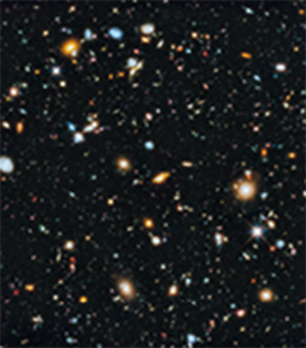
Hubble Ultra Deep Field 2014, imagem em que podem ser vistas
várias galáxias.
NASA, ESA, H. Teplitz and M. Rafelski (IPAC/Caltech), A. Koekemoer
(STScI), R. Windhorst (Arizona State University), and Z. Levay (STScI)
Os pontos luminosos que conseguimos enxergar na imagem HUDF não são
estrelas, mas galáxias, ou seja, conjuntos de estrelas. É interessante destacar que o nome
do telescópio que fez essa imagem é uma homenagem a Edwin Hubble, astrônomo estadunidense
que descobriu a existência das galáxias em 1923. Até então, imaginava-se que as luzes no céu
se resumiam apenas a estrelas e planetas.
Hubble também observou que as galáxias não estão paradas, mas sim se
distanciando umas das outras. Essa revelação alimentou o desenvolvimento da teoria do Big
Bang, que trata da origem do Universo, sendo amplamente aceita nos dias atuais. Além disso,
a observação do afastamento das galáxias comprovou as ideias de Georges Lemaître, que,
também nesse período, afirmava em seus estudos acerca da teoria da relatividade que tudo o
que conhecemos deveria ter estado inicialmente reunido em um único ponto. Anos mais tarde,
George Gamow, Ralph Alpher e Robert Herman complementaram a primeira teoria citada.
Segundo a concepção do Big Bang, há 13,8 bilhões de anos toda
matéria e toda energia que formam o Universo estavam concentradas em um ponto muito
menor do que a extremidade de uma agulha. A densidade era tanta que não havia a
distinção entre matéria e energia, mas o que se chama de singularidade, na qual a
temperatura alcançava os bilhões de graus Celsius. De repente, isso começou a se
expandir de forma muito rápida, atingindo bilhões de quilômetros em poucos minutos, o
que garantiu a queda da temperatura e a separação entre matéria e energia.
A matéria teria, então, começado a se organizar em núcleos de
hidrogênio e hélio, compostos de prótons, nêutrons e elétrons. A partir daí, a força da
gravidade teria levado essas partículas a se concentrarem em nuvens e, posteriormente,
em estrelas, dentro das quais a fusão nuclear foi transformando elementos químicos mais
leves em outros mais pesados. Esse processo se chama nucleossíntese e, hoje, é
considerado a origem da maior parte dos elementos químicos que encontramos em uma tabela
periódica.
Atualmente, o Universo é formado por estrelas e outros astros
distribuídos em galáxias, conforme descrevemos anteriormente, o que pode ser observado
na imagem do “Campo Ultra Profundo do Hubble”. Nela, porém, não vemos o Universo como
ele é hoje, mas como era há cerca de 13 bilhões de anos. Ainda que seja estranho
imaginar, essa é, de fato, uma imagem do passado, e não do presente, pois a luz
registrada pelo telescópio vem de regiões que estão a bilhões de anos-luz de distância
de nós, o que significa que ela demorou todo esse tempo para chegar até o momento em que
foi retratada.
Dentro dessa imensidão espaço-temporal, nós nos encontramos em uma
galáxia que foi há muito tempo batizada de Via Láctea, uma referência à sua aparência de
um rastro de leite lançado no céu noturno, cujo centro podemos observar apenas em noites
muito limpas (sem nuvens, sem Lua e sem a poluição luminosa das cidades).
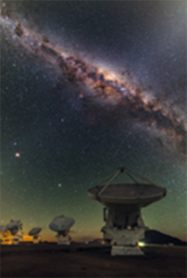
Via Láctea observada a partir do deserto do Atacama, no Chile.
ESO/B. Tafreshi (twanight.org)
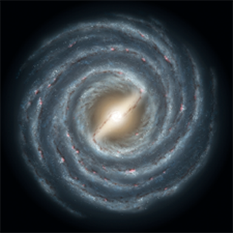
Concepção artística da Via Láctea.
NASA JPL
Não há fotografia real da Via Láctea vista de fora, uma vez que nenhum
objeto feito pelo ser humano conseguiu sair da galáxia nem do Sistema Solar para poder
fotografá-la dessa perspectiva. Contudo, há concepções artísticas que procuram representar a
Via Láctea e a sua real forma em espiral.
Sistema Solar
O Sistema Solar é composto de um conjunto de astros formado por
planetas, satélites naturais, cometas, asteroides, planetas-anões e o Sol, que representa
99,86% de sua massa. Além de ter essa participação desproporcional, é em torno desse astro
que os outros corpos orbitam. Portanto, a própria noção de Sistema Solar está diretamente
ligada ao modelo heliocêntrico, desenvolvido por Nicolau Copérnico (1473-1543), Galileu
Galilei (1564-1642) e Johannes Kepler (1571-1630).
Apesar de alguns pensadores antigos também terem imaginado a
possibilidade de a Terra girar em torno do Sol, e não o contrário, a teo-ria que prevaleceu
por vários séculos na mentalidade ocidental foi a geocêntrica, criada por Ptolomeu. Esse
modelo também era chamado de ptolomaico e poderia parecer mais simples, uma vez que, no
nosso cotidiano, temos a impressão de que o Sol se desloca em torno de nós. Porém, Ptolomeu
explicava de forma complexa o movimento dos astros observados no céu.
Embora pensemos que ele estivesse totalmente equivocado, acreditando que
a Terra fosse o centro do Universo, o sistema que criou é bastante eficiente, servindo como
ferramenta para que os astrônomos pudessem fazer suas observações, seus cálculos e suas
previsões a respeito dos astros.
A principal complicação enfrentada por Ptolomeu era explicar o movimento
dos planetas. Afinal, o que nos dá a impressão de que o Sol e as estrelas distantes giram em
torno de nós é o movimento de rotação da Terra. Contudo, quando observamos o movimento dos
planetas do Sistema Solar no céu noturno, não percebemos uma regularidade muito fácil de
definir, pois eles estão girando em torno do Sol, e não da Terra. Desse modo, estão próximos
o suficiente para mudar sua posição relativa, estando mais perto ou longe de nós em
intervalos de tempo relativamente curtos.
Por apresentarem movimento aparente muito diferente dos outros astros,
os planetas ganharam destaque entre os estudiosos e observadores do céu desde a Antiguidade.
O nome “planeta” é de origem grega e significa errante, o que se deve, justamente, à difícil
definição da regularidade de seu movimento.
Atualmente, a ciência reconhece oito planetas no Sistema Solar. Todos
eles têm em comum o fato de serem grandes o suficiente para terem adquirido uma forma
arredondada devido à sua própria gravidade, mas não a ponto de desenvolver o processo de
fusão nuclear, que leva as estrelas a terem luz própria.
Representação dos planetas do Sistema Solar, sem considerar as
proporções de tamanho ou a distância em relação ao Sol.
alexaldo/iStockphoto.com
Podemos dividir os planetas do Sistema Solar em dois grupos. O primeiro
é
formado pelos telúricos, com superfície sólida e tamanho muito menor que o dos demais, sendo
eles Terra, Mercúrio, Vênus e Marte. O segundo grupo é representado pelos jovianos, gasosos
e de
proporções muito maiores: Júpiter, Saturno, Urano e Netuno. A diferença de tamanho entre
esses
grupos é tão grande que fica difícil retratá-los em uma imagem normal do Sistema Solar, com
as
órbitas desenhadas em torno do Sol. Na figura a seguir, podemos observar as proporções de
alguns
desses planetas quando comparados uns aos outros.
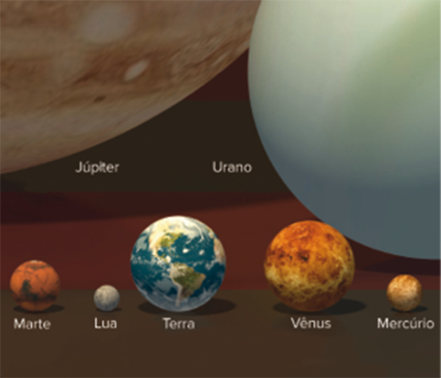
Representação de alguns astros do Sistema Solar segundo a proporção
real.
LIMA NETO, Gastão B. “Tamanho de Planetas e Estrelas”. IAG/USP,
set.
2017. Disponível em: www.astro.iag.usp.br/~gastao/PlanetasEstrelas. Acesso em: 9 jan.
2019.
Os planetas telúricos estão mais próximos do Sol, por isso são chamados
de
internos; já os jovianos estão mais afastados e são conhecidos como externos. Entre esses
dois
grupos se encontra um cinturão de asteroides, que são corpos bem menores, mas que também
estão
em órbita ao redor do Sol.
Os fragmentos de matéria sólida menores do que um asteroide e maiores do
que
um átomo ou molécula e que se movem no espaço interplanetário são intitulados
meteoroides. Quando um desses fragmentos adentra efetivamente a atmosfera terrestre,
a
fricção com os gases atmosféricos faz com que eles queimem e produzam um cilindro
luminoso,
conhecido popularmente como estrela cadente; esse fenômeno é chamado de meteoro, e
não o
corpo rochoso que está em queda. No entanto, se esse corpo não é totalmente queimado
durante a
queda e chega até a superfície, o que sobrou dele passa a ser denominado meteorito.
Para finalizar essa rápida descrição do Sistema Solar, é preciso falar
um
pouco sobre os cometas, que são corpos menores, constituídos de gelo e poeira. Eles
apresentam órbitas muito excêntricas, uma vez que, ao longo de seu movimento de translação,
se
afastam e se aproximam bastante do Sol. Quando estão mais próximos desse astro, a estrutura
de
gelo deles é afetada pela radiação e pelos ventos solares, provocando a formação de uma
cauda.
Discussão em sala
Geocentrismo e heliocentrismo: a realidade e o método científico
Nas ciências, tanto naturais como humanas, definir o que é falso e o que é
verdadeiro não configura exatamente a busca do conhecimento científico. O importante – e
talvez o possível – é criar maneiras de interpretação da realidade que funcionem, mesmo
que
elas não garantam a verdade absoluta. No caso das teorias relacionadas ao Sistema Solar,
apresentadas nesta unidade, podemos refletir sobre quais foram as motivações para a
mudança
dos modelos científicos sugeridos ao longo do tempo. Nesse contexto, cabe o seguinte
questionamento:
Meteorito do Bendegó encontrado no estado da Bahia, em 1784.
Ele estava
exposto no Museu Nacional, na cidade do Rio de Janeiro, local atingido por um
incêndio em
setembro de 2018.
Rubens Chaves/Pulsar Imagens
O geocentrismo foi substituído pelo heliocentrismo por que este é verdadeiro e
aquele era falso ou por que o primeiro modelo não funcionava tão bem como o atual?'
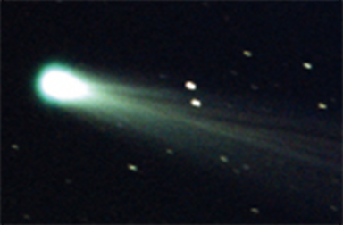
Cometa ISON.
NASA Goddard
A Terra e seus movimentos
No nosso cotidiano, é difícil percebermos que a Terra está se
deslocando,
porém temos a impressão de que o Sol, as estrelas e os planetas estão se movendo em torno de
nós. Chamamos esse fenômeno de movimento aparente dos astros, utilizado para
entendermos
os próprios movimentos da Terra e suas consequências.
Por exemplo, ao observarmos o céu, podemos utilizar o movimento aparente
do
Sol e das estrelas para termos uma noção de localização ou de contagem das horas. O leste e
o
oeste são, aproximadamente, onde o Sol surge no horizonte e se põe, respectivamente. No
entanto,
sabemos que não é esse astro que nasce e se põe, mas sim a Terra que está realizando seu
movimento de rotação. Da mesma forma, podemos dizer que, quando o Sol está mais alto no céu,
ou
seja, no ponto médio entre o nascente e o poente, estamos próximos do meio-dia. Todas essas
referências estão ligadas ao movimento aparente do Sol, uma vez que quem está se movendo na
verdade é a Terra.
A seguir, trataremos dos movimentos da Terra e de suas consequências,
utilizando também o conceito de movimento aparente para com-preender alguns pontos
importantes
do conteúdo.
O movimento de rotação e a orientação
Como sabemos, o movimento de rotação é aquele que a Terra executa em
torno
do próprio eixo, trazendo uma série de consequências para o nosso dia a dia. Para
começar, vamos
destacar a possibilidade de criarmos um sistema de localização baseado nas direções e
nas
coordenadas geográficas.
As direções norte, sul, leste e oeste estão diretamente relacionadas
ao movimento de rotação. As duas primeiras se referem aos polos, que são as extremidades
do eixo formado pelo movimento da Terra ao redor de si mesma; já a direção leste
coincide com o sentido de rotação, e a direção oeste é contrária a ele.
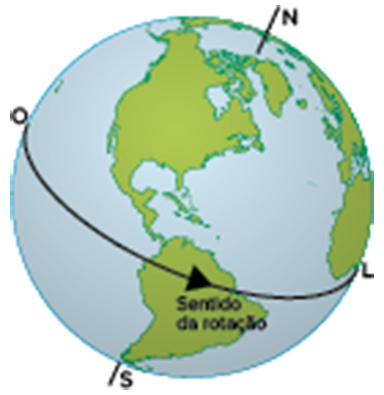
Eixo de rotação da Terra e as direções que são baseadas nele.
Movimento de rotação terrestre registrado com fotografia de longa
exposição.
Na imagem, é possível observar a localização aproximada do Polo Sul celeste.
RapidEye/iStockphoto.com
Essas quatro direções fundamentais são chamadas de pontos cardeais,
e entre
elas estão os seguintes pontos colaterais: noroeste (NO), nordeste (NE), sudeste (SE) e
sudoeste
(SO). Eles são formados pela união dos cardeais em seu entorno, por exemplo, NO = norte
+ oeste.
Há também os pontos subcolaterais, que estão entre os dois primeiros grupos, sendo:
nor-noroeste
(NNO), nor-nordeste (NNE), lés-nordeste (ENE), lés-sudeste (ESE), su-sudeste (SSE),
su-sudoeste
(SSO), oés-sudoeste (OSO) e oés-noroeste (ONO). Todas essas direções são representadas
na rosa
dos ventos.
As direções representadas na rosa dos ventos são usadas, sobretudo,
para
orientação. Orientar-se significa tomar conhecimento das direções. Nesse ponto, é
interessante destacar que essa palavra está diretamente relacionada a oriente, que, por
sua vez,
significa “nascente”, ou o lugar onde o Sol surge. Isso porque a técnica mais comum e
antiga de
se orientar tem como base a posição desse astro, identificando o ponto do horizonte onde
ele
aparece logo pela manhã.
De forma simplificada, a orientação pelo Sol é feita da seguinte
maneira: ao
esticar o braço direito na direção do ponto onde ele nasce e o esquerdo na direção em
que ele se
põe, teremos à nossa frente o norte e às costas o sul.
Porém, existem algumas complicações em relação a esse tipo de
técnica. Por
exemplo, o Sol pode não aparecer tão claramente em uma manhã chuvosa, o que dificulta a
identificação do ponto onde ele surge. Entretanto, o maior problema é que a posição
desse astro
no céu varia, pois nem sempre ele nasce no mesmo ponto, estando equivocada essa
informação.
Dependendo de onde uma pessoa observa o nascimento do Sol, o ponto do nascente no
horizonte pode
mudar ainda mais.
Se esse indivíduo estiver sobre a Linha do Equador, o Sol nascerá
exatamente
a seu leste e irá se pôr a seu oeste nos dias 21 de março e 22 de setembro. No restante
do ano,
tanto o nascente quanto o poente ocorrerão um pouco mais ao norte ou um pouco mais ao
sul. Mais
à frente veremos melhor o porquê.
Outra questão importante a ser lembrada é que não há um ponto leste
ou oeste
no planeta ao qual se possa chegar, ao contrário do norte e do sul. Esses dois últimos
são
pontos porque coincidem com os polos, que são as extremidades do eixo imaginário de
rotação
terrestre. Mas no caso do leste e do oeste, não há um ponto específico, sendo apenas
sentidos
para onde podemos nos dirigir. Porém, se seguirmos em direção a eles, daremos a volta ao
mundo e
não chegaremos a um ponto final.
Outra técnica de orientação, inventada pelos chineses, é a bússola.
A agulha
imantada desse objeto se alinha ao campo magnético do planeta, tendo uma extremidade
apontada
para o norte e outra para o sul. Por convenção, costumamos dizer que essa agulha indica
o norte,
mas ela também mostra o sul.
Ainda em relação à bússola, há um problema a respeito do seu uso
para
orientação, pois o norte e o sul para os quais ela aponta não são o norte e o sul
geográficos,
ou seja, os polos que definimos anteriormente como extremidades do eixo de rotação da
Terra. Na
verdade, as direções identificadas por esse objeto são o norte e o sul magnéticos, que
não
coincidem completamente com os polos nem estão sempre no mesmo lugar.
Rosa dos ventos.
Leste e oeste são sentidos: o primeiro a favor da rotação e o
segundo
contrário a ela. Todavia, não existe no planeta um extremo leste ou oeste, como podemos
observar
na representação do globo.
Mudanças na posição do nascer e pôr do Sol em dois períodos
diferentes do
ano em uma mesma localização do Hemisfério Sul.
Bússola.
Pongasn68/iStockphoto.com
Polo Norte, magnético e geográfico, e as consequentes situações de
declinação magnética conforme o local do observador.
O campo magnético da Terra é formado pelo movimento de rotação e pela
consequente movimentação do núcleo externo do planeta, que é metálico (composto de níquel e
ferro) e se encontra em estado líquido. Esse campo apresenta uma oscilação, uma variação
constante, resultando na chamada declinação magnética, que é a diferença entre o
norte e
o sul geográficos e os magnéticos.
Os valores de declinação magnética variam de acordo com o lugar e o dia.
Portanto, se quisermos ter uma orientação realmente precisa ao utilizarmos a bússola,
devemos
saber tais valores, que estão disponíveis em mapas técnicos e, atualmente, em diferentes
fontes
na internet.
MAIS
National Oceanic and Atmospheric Administration (NOAA)
Órgão do governo dos Estados Unidos que mantém um site com o serviço
de cálculo da declinação magnética. Por meio dele, podemos saber qual é o valor da
declinação no local onde moramos ou de qualquer outro ponto da superfície terrestre.
Disponível em: http://p.p4ed.com/HTOIY.
Da orientação à localização
O movimento de rotação nos permite utilizar técnicas de orientação,
e por meio delas podemos seguir direções na superfície terrestre a partir do ponto em
que nos encontramos. Dessa forma, veremos que a combinação das direções norte-sul e
leste-oeste nos ajuda a localizar qualquer ponto na superfície terrestre e, para isso,
estudaremos as chamadas coordenadas geográficas.
Linha do Equador, paralelos e hemisférios.
As coordenadas são a combinação de valores de latitude e
longitude baseados nos paralelos e nos meridianos, respectivamente, que
definem um ponto ao se cruzarem.
Nesse contexto, precisamos compreender que os paralelos são
circunferências imaginárias, paralelas umas às outras e perpendiculares ao eixo de rotação.
A Linha do Equador, que pode ser denominada apenas Equador, é o maior de todos os paralelos
e divide a Terra em dois hemisférios: o Norte – conhecido também por setentrional ou boreal
– e o Sul – também chamado de meridional ou austral.
Aurora boreal no Parque Nacional Wapusk, na província de Manitoba, no
norte do Canadá.
AndreAnita/iStockphoto.com
Você já deve ter ouvido falar da aurora
boreal. Trata-se de um fenômeno que ocorre em regiões relativamente
próximas do Polo Norte, sendo caracterizado pelo aparecimento de luzes
brilhantes e coloridas no céu, resultantes do encontro entre as partículas
emitidas pelo Sol e o campo magnético da Terra.
As auroras também existem no sul do planeta, nas
proximidades da Antártida, sendo chamadas de auroras austrais.
Além do Equador, mais quatro paralelos têm nome e, por isso, são
chamados de paralelos notáveis. São eles: trópicos de Capricórnio e de Câncer e círculos
polares Ártico e Antártico. Mais à frente, veremos por que esses paralelos também são
especiais.
Os meridianos, por sua vez, são semicircunferências imaginárias que
ligam os polos Norte e Sul. Vale reforçar que eles não são circunferências, a exemplo
dos paralelos, e que cada um deles possui os dois polos como limite. Do lado oposto do
planeta, como se fosse a continuação de cada meridiano, existe um antimeridiano.
O Meridiano de Greenwich foi escolhido como central em um acordo
internacional, firmado em 1884. Isso ocorreu porque a Inglaterra era a maior potência
mundial da época. Ao contrário dos paralelos, que apresentam diferenças de extensão
entre si (a Linha do Equador é o maior deles), os meridianos não possuem tamanhos
distintos.
O Meridiano de Greenwich divide o planeta em dois hemisférios:
Ocidental (Oeste) e Oriental (Leste).
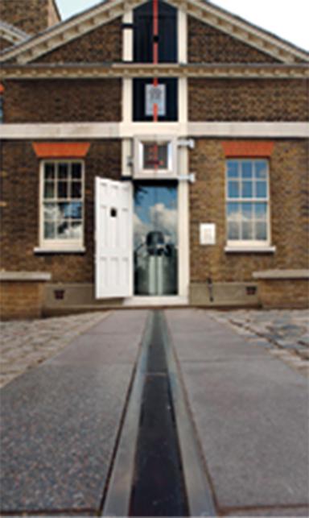
Meridiano de Greenwich representado por uma linha no chão e na
parede do observatório de mesmo nome, que está localizado próximo a Londres, no Reino
Unido.
Topham/PA/AGB Photo Library
Paralelos notáveis e meridianos.
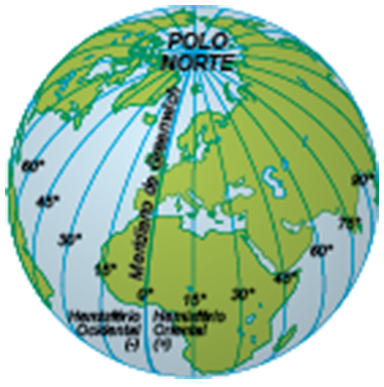
Coordenadas geográficas
Fonte: INSTITUTO BRASILEIRO DE GEOGRAFIA E ESTATÍSTICA. Atlas
geográfico
escolar. 8 ed. Rio de Janeiro: IBGE, 2018. p. 32. (Adapt.).
Os meridianos e os paralelos servem como referência para a definição das
latitudes e longitudes. A latitude está baseada nos paralelos e pode ser definida como a
distância em graus de um ponto qualquer da superfície da Terra até a Linha do Equador,
variando
de 0º, neste que é o maior paralelo, até 90º, nos polos Norte ou Sul. Já a longitude se
baseia
nos meridianos e tem variação de 0º, no Meridiano de Greenwich, até 180º, no antimeridiano
de
Greenwich.
A latitude e a longitude são medidas em graus porque são ângulos
formados
pelas linhas imaginárias originais (Linha do Equador e Meridiano de Greenwich,
respectivament
com o ponto a ser localizado, tendo o centro da Terra como vértice. O cruzamento da latitude
com
a longitude estabelece a localização de um ponto na superfície terrestre. As coordenadas
geográficas são utilizadas dessa maneira.
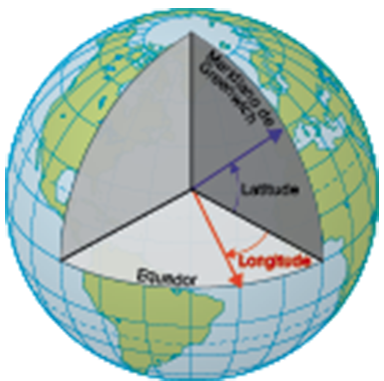
Latitude e longitude como ângulos a partir do centro da Terra.
Movimento de rotação, fusos horários e Linha Internacional da Data
O movimento de rotação da Terra define a duração do dia nesse planeta,
ou
seja, uma volta em torno de seu próprio eixo é equivalente a um dia terrestre. Esse período
de
tempo é diferente para outros planetas. A rotação de Vênus, por exemplo, dura 243 dias
terrestres, e a de Júpiter menos da metade de um dia nosso.
A mudança do sistema GMT para o UTC não
traz
grande diferença para o entendimento dos fusos horários. Isso ocorreu para
que
estes fossem padronizados de acordo com o tempo marcado nos relógios
atômicos
localizados em vários pontos do mundo, que são mais precisos.
Ao longo da história, o dia foi dividido em 24 horas, a hora em
60 minutos e
o minuto, por sua vez, em 60 segundos. Essa medida do tempo só passou a ser realmente
importante
para a maioria das pessoas no século XIX, com o desenvolvimento da sociedade
urbano-industrial,
quando o trabalho, as comunicações e as operações dos bancos e das bolsas de valores
precisaram
seguir certa organização temporal.
Por isso que, na Conferência Internacional do Meridiano, realizada
em 1884,
quando o Meridiano de Greenwich foi definido como o marco zero das longitudes, também
foi
estabelecida uma padronização internacional para os horários. Trata-se do sistema
Greenwich Mean
Time (GMT), posteriormente substituído pelo Coordinated Universal Time (UTC).
No final dos anos 1870, foi feita uma proposta para que o planeta fosse
dividido em 24 faixas (fusos), de 15º cada, e que as localidades incluídas dentro delas
adotassem como oficial o horário solar (real) do meridiano central do fuso. Antes da
existência
desse sistema, cada região tinha como padrão de medida das horas o seu horário local, também
chamado de solar, ou real. Como o nome indica, esse modelo tem como base a relação entre o
local
e o Sol. Quando esse astro chega à metade de sua trajetória, entre o nascente e o poente,
atingindo o ponto mais alto no céu, tem-se o meio-dia local.
Esquema teórico dos fusos horários.
As localidades que se encontram em um mesmo meridiano têm o meio-dia
solar
no mesmo instante, e, a cada pequena mudança de longitude, altera-se também o momento em que
acontece o meio-dia solar. Assim, a cada um grau de longitude, há uma diferença de quatro
minutos entre os meios-dias de duas regiões.
Nesse contexto, o sistema UTC é uma padronização dos horários oficiais de maneira que eles mudem apenas de uma em uma hora (mesmo que ainda existam algumas exceções no mundo). Assim, tendo como referência o fuso em torno do Meridiano de Greenwich, que é o marco zero, a cada fuso ao leste, aumenta-se uma hora e, ao oeste, subtrai-se uma hora. Portanto, ao nos deslocarmos para o oeste, dizemos que estamos indo para os fusos –1, –2, –3 e assim por diante. Por outro lado, quando nos movemos para leste, passamos pelos fusos +1, +2, +3 e assim sucessivamente.
O Brasil possui quatro fusos horários (–2, –3, –4 e –5) em relação ao Meridiano de Greenwich, tendo como referência os seguintes meridianos centrais: 30° O, 45° O, 60° O e 75° O, respectivamente.
Fusos horários mundiais
Fonte: The World Factbook. Washington, DC: Agência Central de
Inteligência. Disponível:
www.cia.gov/library/publications/the-world-factbook/docs/refmaps.html.
Acesso em: 13 jul. 2021.
Foto: TimeZonesBoy/Wikimedia Commons.
Fusos horários brasileiros
nte: IBGE, Diretoria de Geociências, Coordenação de Cartografia.
Anuário
Estatístico do Brasil 2014. Rio de Janeiro: IBGE, v. 74, 2015. Disponível em:
https://biblioteca.ibge.gov.br/index.php/biblioteca-catalogo?view=detalhes&id=720.
Acesso
em: 13 jul. 2021. Brasil. Lei n. 12.876, de 30 de outubro de 2013. Altera o decreto n.
2.784, de
18 de junho de 1913, para estabelecer os fusos horários do estado do Acre e de parte do
estado
do Amazonas, e revoga a lei n. 11.662, de 24 de abril de 2008. Diário Oficial da
União,
Brasília, DF, ano 150, n. 212, 31 out. 2013. Seção 1, p. 1. Disponível em:
http://presidencia.gov.br/acervo/legislacao. Acesso em: 13 jul. 2021. In: INSTITUTO
BRASILEIRO
DE GEOGRAFIA E ESTATÍSTICA. Atlas geográfico escolar. 7 ed. Rio de Janeiro: IBGE, 2016. p.
91.
(Adapt.).
Finalizando a explicação sobre o sistema internacional de fusos
horários,
precisamos destacar também o conceito de Linha Internacional da Data. Para
começar,
imagine a seguinte situação: são 12 horas do dia 30 de junho no Meridiano de Greenwich.
Acrescentando-se uma hora a cada fuso no sentido leste, quando chegarmos ao fuso +12
serão 24
horas do mesmo dia. Já se subtrairmos uma hora a cada fuso no sentido oeste, ao
chegarmos ao
fuso –12 teremos 0 hora desse dia. O problema é que tanto o fuso +12 como o –12 são os
mesmos, e
ambos têm o antimeridiano de Greenwich, ou seja, o meridiano 180o, como central. Essa
situação é
bastante inusitada, uma vez que, de um lado do fuso, o dia 30 de junho está começando e,
do
outro, ele está terminando.
Então, para corrigir esse problema, foi estabelecida a Linha
Internacional
da Data, também chamada de Linha Internacional da Mudança de Data. Quando a atravessamos
no
sentido leste, subtraímos 24 horas; já quando a cruzamos no sentido oeste, somamos 24
horas.
Linha Internacional da Data
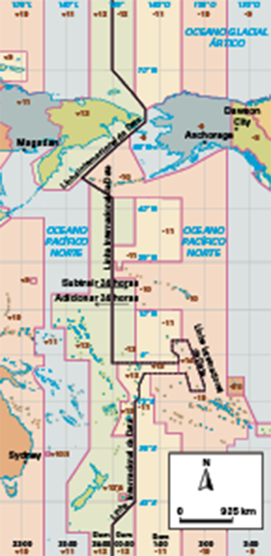
Fonte: The World Factbook. Washington, DC: Agência Central de
Inteligência. Disponível: https://www.cia.gov/the-world-factbook/maps/. Acesso em: 13
jul. 2021.
(Adapt.).
Foto: Jailbird/Wikimedia Commons (CC BY-SA-3.0).
Translação e suas consequências
O movimento de translação é aquele que a Terra faz em torno do Sol ao
seguir sua órbita elíptica, em que se aproxima e se afasta levemente desse astro. O ponto de
maior proximidade é o periélio (147 milhões de km), e o de maior afastamento é o afélio (152
milhões de km). A Terra cumpre sua jornada a cada 365 dias, 6 horas, 9 minutos e 9 segundos,
aproximadamente.
Um dos resultados desse movimento é a definição do ano terrestre, que
tem 365 dias, portanto 6 horas, 9 minutos e 9 segundos a menos do que a translação completa.
Para compensar essa diferença, foi criado o ano bissexto, que possui um dia a mais (29 de
fevereiro) e acontece a cada quatro anos.
Outra consequência – também associada à inclinação do eixo de rotação da
Terra – é a existência das estações do ano e dos solstícios e equinócios. O
fato de a Terra percorrer sua órbita em torno do Sol em uma posição inclinada faz com que a
incidência dos raios solares varie ao longo do ano, dando origem às estações do ano.
A inclinação do eixo de rotação é de 23° 27’ (aproximadamente 23,5°) em
relação ao plano da órbita, que tem o nome de eclíptica. Graças a esse fato, ao longo do
movimento de translação, existem quatro momentos especiais: dois equinócios e dois
solstícios.
Inclinação do eixo de rotação da Terra.
Movimento de translação da Terra, responsável por formar os solstícios e
os
equinócios, além das estações do ano.
Os solstícios são os momentos nos quais os raios solares incidem
perpendicularmente em um dos trópicos, ou seja, o Sol passa pelo zênite de todos os
pontos que
formam cada um dos dois paralelos notáveis. O zênite é o prolongamento de uma linha
imaginária
que vem do centro da Terra e passa perpendicularmente por um ponto qualquer da
superfície
terrestre. Além disso, os raios solares tangenciam os círculos polares durante os
solstícios.
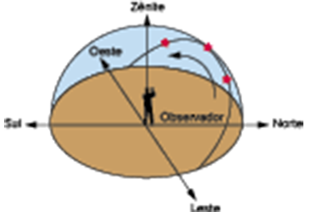
Representação do zênite de um lugar.
Os trópicos e os círculos polares apresentam as latitudes 23° 27’ e 66°
33’,
respectivamente, sendo essas as mesmas medidas da inclinação do eixo de rotação terrestre e
de
seu complemento. Isso não é uma coincidência, pois é devido a esse ângulo que existem os
trópicos, que, por sua vez, representam os paralelos (mais ao norte, Trópico de Câncer, e,
mais
ao sul, Trópico de Capricórnio) nos quais os raios solares incidem perpendicularmente. É
também
por causa dessa inclinação que as áreas delimitadas pelos círculos polares são iluminadas
ininterruptamente ao longo de 24 horas, ao menos, durante o verão e, no inverno, ficam quase
um
dia inteiro no escuro, no mínimo.
A palavra “solstício” tem sua origem no latim e significa “Sol parado”
ou “o
dia em que o Sol não se mexe”. Isso porque, considerando o movimento aparente desse astro, o
solstício é o dia do ano em que, ao meio-dia nos locais onde passam os trópicos, o Sol está
mais
alto (verão) ou mais baixo (inverno) no céu. Do ponto de vista da latitude, é quando ele
está
incidindo perpendicularmente mais ao norte ou mais ao sul. Isso significa que os raios
solares
nunca incidem de forma perpendicular ao sul do Trópico de Capricórnio ou ao norte do Trópico
de
Câncer. Essas regiões, chamadas também de extratropicais, sempre recebem o Sol vindo da
direção
contrária à do seu hemisfério.
Esse dia marca, ainda, a entrada das estações: no Hemisfério Sul, o
solstício de verão ocorre entre 21 e 22 de dezembro, e o de inverno entre 21 e 22 de junho.
No
Hemisfério Norte, é exatamente o contrário.
Portanto, o solstício de verão é marcado pela maior incidência dos
raios
solares sobre um dos trópicos, tanto no sentido da intensidade, pelo fato de chegarem
menos
inclinados, como da duração, já que, nessa época do ano, os dias são mais longos do que
as
noites. O solstício de inverno, por sua vez, ocorre quando em um dos trópicos os raios
solares
são menos intensos, pois incidem com maior inclinação, tornando as noites mais longas do
que os
dias.
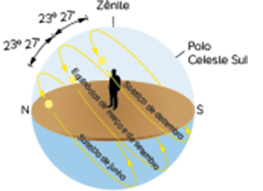
Movimento aparente do Sol no Hemisfério Sul.
Contudo, a diferença de duração entre os dias e as noites só pode ser
notada
conforme nos afastamos do Equador. Assim, quanto maior a latitude, maior a diferença entre a
duração dos dias nessas duas estações. Já nas proximidades dos polos Norte e Sul podem ser
registrados quase seis meses de claridade no verão e o mesmo período de escuridão no
inverno,
com alguns dias de transição entre eles.
Duração do dia ao longo do ano
Fonte: Fundação Planetário da Cidade do Rio de Janeiro. Disponível em:
http://planeta.rio/cartas-celestes/. Acesso em: 13 jul. 2021.
Design Pics Inc/Getty Images
Devido ao aumento da duração do dia durante o verão, algumas regiões
distantes do Equador costumam adotar o chamado horário de verão. Nele, os relógios são
adiantados uma hora com o objetivo de prolongar ainda mais o período de claridade no começo
da
noite, economizando energia e proporcionando às pessoas um tempo maior de lazer nas áreas
abertas e naturalmente iluminadas. Isso só é possível pelo fato de que o Sol, dois meses
antes e
dois meses depois do solstício de verão, não apenas se põe mais tarde, como também nasce
mais
cedo. Dessa forma, quando adiantamos o relógio em uma hora, temos um tempo maior para
aproveitar
o período de claridade do dia.
A adoção do horário de verão vem sendo
questionada em
vários países recentemente. A União Europeia, por exemplo, decidiu que ele
não
será mais obrigatório para os países do bloco, como ocorreria até 2020. O
argumento de quem acha que esse horário especial não deve mais ser adotado é
que
sua contribuição para a economia de energia vem diminuindo bastante devido
ao
uso de lâmpadas mais econômicas e ao deslocamento do consumo energético para
aparelhos de ar condicionado, que funcionam no verão de forma independente
do
período de iluminação. Há, no entanto, quem defenda que a adoção da medida
traz
outros benefícios, como a maior dedicação das pessoas às atividades físicas
durante o período extra de claridade no verão.
No Brasil, o horário de verão costumava ser adotado entre o final de
outubro
– em 2018, teve início no primeiro domingo de novembro – e meados de fevereiro, apenas
nos
estados das regiões Centro-Oeste, Sudeste e Sul, além do Distrito Federal. A proximidade
das
regiões Norte e Nordeste à Linha do Equador, com a consequente baixa latitude, contribui
para
que a diferença de duração dos dias e das noites ao longo do ano seja muito pequena
nessas
regiões.
Adoção do horário de verão – 2018/2019
Fonte: Governo do Brasil.
Após passar pelo solstício, a Terra continua seu percurso em torno do
Sol,
chegando, três meses depois, ao equinócio. Essa palavra também tem origem no latim e
significa
“noites iguais”, uma vez que, nesse período, a duração dos dias e das noites é igual em todo
o
planeta, tanto nas baixas como nas altas latitudes.
O equinócio é o dia em que os raios solares incidem perpendicularmente
no
Equador, marcando o início da primavera e do outono. No Hemisfério Sul, o equinócio de
primavera
ocorre entre 22 e 23 de setembro, e o de outono, entre 21 e 22 de março.
Movimentos da Lua e suas consequências na Terra
Satélite natural é um corpo que orbita um planeta, que, por sua
vez,
orbita uma estrela. No Sistema Solar, existem muitos desses corpos celestes; alguns deles
chegam
a ser do tamanho de pequenos planetas, mas a maioria é bem menor, aproximando-se do tamanho
de
asteroides.
A Lua é o satélite natural da Terra e também apresenta movimento de
translação e rotação, ambos com a mesma duração de, aproximadamente, 28 dias. Dessa forma, o
tempo que ela leva para dar uma volta em torno do próprio eixo é o mesmo que demora para
completar uma volta em torno da Terra. Como consequência disso, a Lua sempre está com o
mesmo
lado voltado para o nosso planeta. A outra face, que não pode ser observada por nós, ganhou
o
apelido de lado escuro da Lua, ou, na expressão em inglês, dark side of the Moon.
As fases da Lua – cheia, minguante, nova e crescente – são resultado de
seu
movimento de translação combinado com a luz solar. A exemplo da Terra, ela está sempre com a
metade de sua superfície iluminada. O que muda, portanto, é o nosso ponto de vista. Na lua
cheia, vemos totalmente a face que recebe a luz solar; nas fases minguante e crescente,
observamos apenas uma parcela desse mesmo lado; e, por fim, na lua nova não conseguimos
enxergar
o lado iluminado a partir da Terra.
Na lua cheia, pode ocorrer ainda o fenômeno da superlua, que
acontece quando
essa fase coincide com o perigeu desse satélite, ou seja, no momento em que se encontra
mais
próximo da Terra. Isso faz com que o brilho da lua cheia fique mais intenso, e sua
imagem até
11% maior do que a média.
Como vimos, a diferença entre as fases da Lua está relacionada com
nosso
ponto de vista; afinal, ela está sempre com uma metade iluminada. Mas há um fenômeno
diretamente
associado às fases da Lua que vai muito além da questão visual: o fenômeno das
marés.
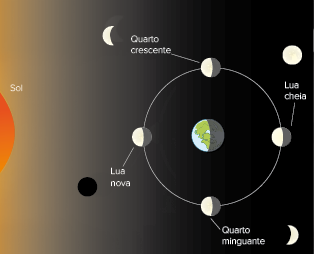
As fases da Lua.
Em cada uma de suas fases, a Lua se encontra em uma posição diferente em
relação à Terra e ao Sol, alterando o jogo de forças gravitacionais entre esses três astros,
as
quais estão relacionadas à massa e à distância. Assim, mesmo que a Lua seja menor do que o
Sol,
sua atração gravitacional sobre nós é considerável por ela estar muito mais próxima da
Terra.
Esse fenômeno pode ser percebido na formação das marés, que, por sua
vez,
têm atração exercida tanto pela Lua como pelo Sol. Contudo, a atração da Lua, nesse caso, é
bem
mais acentuada (aproximadamente o dobro), provocando uma deformação na distribuição das
águas
oceânicas de maneira que, na área da Terra para a qual a Lua estiver mais voltada e na área
oposta, formam-se as marés altas (também chamadas de maré-cheia ou preamar) e, nas outras
áreas,
as marés baixas, como podemos observar a seguir.
Esquema teórico da formação das marés. O tamanho dos oceanos é
representado
desproporcionalmente para facilitar a compreensão.
Como a Terra apresenta o movimento de rotação, cada local, ao longo das
24
horas do dia, passa duas vezes pela maré alta e outras duas pela baixa. Mas a intensidade
delas,
cuja diferença é a amplitude de maré, varia de um lugar para outro. Além das posições
do
Sol e da Lua, outros fatores, como a forma do litoral, o relevo oceânico e a proximidade da
Linha do Equador, também podem contribuir para que elas sejam mais altas ou baixas. No
Brasil,
as maiores amplitudes de maré estão nos litorais do Norte e Nordeste, onde a diferença chega
a
até oito metros em um único dia; isso pode ser explicado porque essas regiões estão mais
próximas do Equador e têm litorais menos entrecortados e mais rasos.
As influências da Lua e do Sol sobre a maré podem ser reforçadas ou não.
Nas
fases da lua cheia e nova, existe um alinhamento aproximado entre Sol, Lua e Terra,
intensificando a deformação dos oceanos, provocada pela força das marés. Em outras palavras,
nessas fases da Lua as variações diárias entre maré alta e baixa são maiores. A esses
períodos
damos o nome de maré de sizígia.
Já nas fases minguante e crescente, as forças exercidas pela Lua e pelo
Sol
não se complementam. Podemos dizer até mesmo que a atração do Sol diminui a da Lua, fazendo
com
que a variação entre as marés alta e baixa seja menor. Chamamos esses períodos de maré de
quadratura.
Para finalizar este tópico, falaremos de mais um fenômeno resultante da
relação entre Sol, Terra e Lua: os eclipses, que são formados por uma sombra
produzida
pelo alinhamento desses três astros.
Quando a Lua se coloca entre o Sol e a Terra, o que só pode acontecer
durante a fase da lua nova, sua sombra é projetada no nosso planeta, escondendo total ou
parcialmente o Sol. Chamamos esse fenômeno de eclipse solar. Já quando a Terra se coloca
entre o
Sol e a Lua, o que ocorre nas fases de lua cheia, a sombra do planeta terrestre é projetada
na
superfície lunar. Nesse caso, dizemos que ocorreu um eclipse lunar.
Eclipses solar e lunar no alinhamento entre os três astros.
Fonte: INSTITUTO DE FÍSICA. Departamento de Astronomia da UFRGS.
Disponível
em: http://astro.if.ufrgs.br/eclipses/eclipse.htm. Acesso em: 12 mar. 2019.
Portanto, podemos concluir que os eclipses só podem acontecer nas fases
da
lua cheia (lunar) e nova (solar). Contudo, eles não acontecem todos os meses, de acordo com
as
fases desse astro, mas sim em média duas vezes por ano. A raridade desse fenômeno pode ser
explicada pelo fato de que o plano da órbita da Lua em torno da Terra é inclinado em relação
ao
do nosso planeta em torno do Sol.
Aplicando conhecimentos
1
A Astronomia é uma área que está próxima tanto da Física quanto da
Geografia. Apesar de o objeto de estudo dos geógrafos ser a superfície da Terra, as
pesquisas astronômicas ajudaram no desenvolvimento da Cartografia. Explique como se deu
essa contribuição.
2
A imagem a seguir foi ilustrada a partir de um mapa técnico feito
pelo Instituto Brasileiro de Geografia e Estatística (IBGE), no qual a precisão da
orientação e da localização é muito importante. A sigla NM significa norte magnético; e
a NG, norte geográfico. Com base nessas informações, responda às questões.
Fonte: Instituto Brasileiro de Geografia e Estatística. Disponível em:
https://biblioteca.ibge.gov.br/visualizacao/mapas/GEBIS%20-%20RJ/SF-23-Z-A-I-2.png. Acesso
em: 12 mar. 2019. (Adapt.).
Qual a diferença entre o norte magnético e o norte geográfico?
O que é declinação magnética e qual é o seu valor na
imagemapresentada?
3
O mapa a seguir representa os estados brasileiros que
adotaram o horário de verão entre 2018 e 2019. No que consiste esse regime diferenciado
e por
que ele só pode ser utilizado entre o meio da primavera e do verão? Além disso, por que
os
estados das regiões Norte e Nordeste não adotavam esse horário?
4
O desenho a seguir representa o movimento aparente do Sol
no Hemisfério Sul. Observando as circunferências que correspondem aos solstícios e
equinócios,
explique quais são as diferenças de duração do período de luz entre esses dias.
Consolidando saberes
1
UEPG-PR 2015 Sobre o Sistema Solar e as teorias a ele
relacionadas, assinale o que for correto.
01. A teoria de um sistema
solar geocêntrico foi proposta pelo astrônomo grego Ptolomeu e, mais tarde, contestada
por
Nicolau Copérnico.
02. A teoria heliocêntrica foi defendida por Galileu Galilei, que
aceitou as ideias propostas por Nicolau Copérnico.
04. Os planetas internos são gasosos e os externos são os planetas
terrestres.
08. Os maiores planetas do Sistema Solar estão mais próximos do Sol
enquanto os menores, por sofrerem menor atração gravitacional, estão mais afastados.
O belo fenômeno ótico da aurora boreal é comum no céu noturno das
latitudes polares da Terra. Tal fenômeno, de grande apelo visual, é causado por contato:
dos ventos solares com o campo magnético do planeta.
da gravidade da Lua com a estação inverno no polo Norte.
dos raios solares com as águas congeladas das montanhas.
das massas de ar polares com os raios do sol da meia-noite.
das massas oceânicas frias com a radiação solar no inverno.
3
UPF-RS 2017 Por causa do movimento de rotação da
Terra, diferentes pontos longitudinais da superfície terrestre têm horários diversos.
Tendo por base
a estrutura dos fusos horários, é correto afirmar que:
Se em
Fernando de Noronha (PE) são 20 horas do dia 30 de dezembro, em Rio Branco (AC) são 17
horas do
dia 30 de dezembro.
Como as linhas que delimitam os fusos atravessam várias
unidades
político-administrativas, os municípios fizeram várias adaptações, estabelecendo os
limites
teóricos dos fusos.
A partir do Meridiano de Greenwich, as horas vão aumentando
para
oeste e diminuindo para leste.
Atualmente, o Brasil tem três fusos horários, e o estado do
Maranhão está dividido em dois fusos diferentes.
Existem 24 fusos no planeta, cada um deles equivalendo a
15° de
latitude.
4
Unicamp-SP 2019 Dois amigos planejaram assistir à abertura
da Copa do Mundo em Moscou. Eles partiram no dia 10 de junho de 2018 do Aeroporto
Presidente Juscelino Kubitschek (Brasíli, situado a 45° de longitude Oeste, às 16 horas,
com destino ao Aeroporto de Heathrow (Londres), situado a 0° de longitude. O voo teve
duração de 10 horas. Os dois amigos esperaram por três horas para partirem em direção ao
Aeroporto Internacional Domodedovo (Moscou), situado a 60° de longitude Leste, e o
segundo voo durou quatro horas.
Com base nessas informações e considerando que o continente europeu
adota, neste período do ano, o horário de verão, que adianta os relógios em uma hora,
indique o dia e a hora em que os dois amigos chegaram ao Aeroporto Internacional Domodedovo
em Moscou.
11 de junho, às 13 horas.
11 de junho, às 16 horas.
11 de junho, às 17 horas.
10 de junho, às 16 horas.
5
UEL-PR 2015 Analise o mapa de fusos horários do Brasil
a seguir.
Supondo que um passageiro saia às 7h da manhã de Fernando de Noronha
(PE) com destino a Campo Grande (MS) para uma reunião e sabendo-se que a viagem teve duração
de 6 horas e 30 minutos, assinale a alternativa que apresenta, corretamente, o horário local
em que o passageiro deve chegar a Campo Grande (MS).
05h30min
09h30min
10h30min
11h30min
13h30min
6
Uerj 2019
Avião levantou voo em 2018 e aterrou em 2017
Um avião das linhas aéreas do Havaí fez uma espécie de viagem ao passado, ao
sair
da Nova Zelândia quando já passava da meia-noite de 1º de janeiro e chegar ao Havaí quando
ainda
era manhã de 31 de dezembro. Tudo se explica com o sistema de fusos horários do globo.
Adaptado de sicnoticias.sapo.pt, 01/01/2018.
A “viagem ao passado” relatada na reportagem é explicada pelo percurso
do avião, que fez necessariamente a seguinte trajetória:
do hemisfério sul para o hemisfério norte
do hemisfério norte para o hemisfério sul
do hemisfério oeste para o hemisfério leste
do hemisfério leste para o hemisfério oeste
7
Uerj
Linha Internacional de Mudança de Data
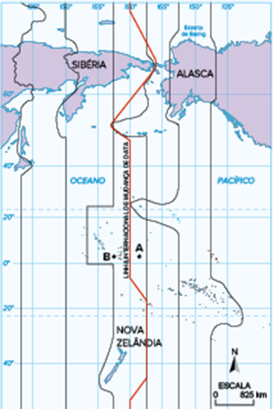
ELIAN ALABI LUCCI et al. Adaptado de Território e sociedade no
mundo
globalizado. São Paulo: Saraiva, 2005.
Ao longo do meridiano 180°, no Oceano Pacífico, encontra-se a Linha
Internacional de Mudança de Data. Quando for meio-dia em Greenwich, será meia-noite na Linha
Internacional de Mudança de Data e lá um novo dia estará se iniciando.
Considere que na localidade B, assinalada no mapa, sejam 11 horas de
domingo, do dia 22 de junho de 2008.
Nessas condições, na localidade A, também assinalada no mapa, o
horário, o dia da semana e o dia do mês de junho do mesmo ano serão, respectivamente:
10 – sábado – 21
11 – sábado – 21
10 – domingo – 22
11 – domingo – 22
8
Unicamp-SP 2018 A figura a seguir exibe uma
representação estilizada do mapa do estado de São Paulo. As linhas pontilhadas
horizontais e
verticais indicam intervalos iguais de longitude e latitude, e o ponto preto representa
a cidade de
Campinas.
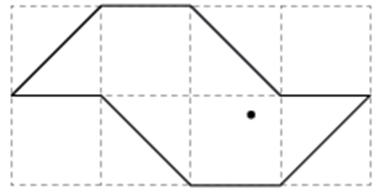
Considere que o estado de São Paulo está, aproximadamente, entre as
latitudes 20º e 25º Sul e entre as longitudes 44º e 54º Oeste. A partir da representação
acima, conclui-se que Campinas se localiza entre
as latitudes 24º e 25º Sul.
as latitudes 21º e 22º Sul.
as longitudes 46º e 48º Oeste.
as longitudes 50º e 52º Oeste.
9
UEM-PR A respeito dos movimentos da Terra e das
estações do ano, assinale o que for correto.
01. As estações do
ano são bem definidas em todos os lugares da Terra, inclusive nas calotas polares.
02. Os equinócios e solstícios são datas que marcam a metade
do período
de cada estação do ano. Eles foram estabelecidos em função dos movimentos de acresção da
Terra.
04. A inclinação do eixo de rotação da Terra e o seu
movimento de
translação influenciam na distribuição desigual de luz e de calor solar durante o ano.
08. O movimento de rotação da Terra é de oeste para leste,
sendo também
responsável pela alternância entre dia e noite e pela circulação dos ventos e das
correntes
marítimas.
16. Devido aos movimentos da Terra e à sua forma, as regiões
próximas ao
Equador recebem os raios solares quase verticalmente durante todo o ano.
Soma:
10
Unicamp-SP 2020 As coordenadas geográficas são um sistema
de linhas imaginárias traçadas sobre o globo terrestre ou um mapa. Através da interseção
de um meridiano com um paralelo, podemos localizar cada ponto da superfície da Terra.
Como a Terra apresenta uma superfície quase esférica, é possível determinar dois pontos
diametralmente opostos, denominados antípodas. Apenas algumas cidades brasileiras têm
uma cidade antípoda, como Coari (AM) e Pontes e Lacerda (MT). Assinale a alternativa que
indica duas cidades antípodas.
Pontes e Lacerda (Brasil) – 15º latitude S e 60º longitude
W;
Candelária (Filipinas) – 15º latitude N e 60º longitude E.
Coari (Brasil) – 4º latitude S e 63° longitude W; Temon
(Malási –
4º latitude N e 63º longitude E.
Coari (Brasil) – 4º latitude S e 63° longitude W; Temon
(Malási –
4º latitude N e 117º longitude E.
Pontes e Lacerda (Brasil) – 15º latitude S e 60º longitude
W;
Candelária (Filipinas) – 75º latitude N e 120º longitude E.
11
IFSC 2014
Duração média mensal da presença do Sol ao longo de um dia, em
relação às cidades de Manaus no Brasil e de Nova Iorque nos EUA
Manaus
Nova Iorque
Janeiro
12 horas e 16 minutos
09 horas e 38 minutos
Fevereiro
12 horas e 12 minutos
10 horas e 40 minutos
Março
12 horas e 07 minutos
11 horas e 58 minutos
Abril
12 horas e 02 minutos
13 horas e 19 minutos
Maio
11 horas e 58 minutos
14 horas e 28 minutos
Junho
11 horas e 57 minutos
15 horas e 02 minutos
Julho
11 horas e 57 minutos
14 horas e 45 minutos
Agosto
12 horas e 01 minuto
13 horas e 44 minutos
Setembro
12 horas e 05 minutos
12 horas e 27 minutos
Outubro
12 horas e 10 minutos
11 horas e 06 minutos
Novembro
12 horas e 15 minutos
09 horas e 55 minutos
Dezembro
12 horas e 17 minutos
09 horas e 18 minutos
(Disponível em: http://ptaff.ca/soleil/?lang=en_CA. Acesso: 9 maio 2014.)
Analisando o quadro apresentado, assinale a soma da(s) proposição(ões)
CORRETA(S).
01. Manaus, quando comparada a Nova Iorque, possui pouca variação anual
na duração da presença do Sol ao longo do dia, em virtude da posição latitudinal da
cidade
(3°1’59” S).
02. A rotação da Terra é o movimento cósmico que promove a diferença na
quantidade de horas de presença do Sol entre Manaus e Nova Iorque.
04. O período do ano em que o Sol fica menos presente em Nova Iorque
corresponde ao período de inverno.
08. Em Manaus, a pouca variação na quantidade de horas em que o Sol está
presente faz com que o horário de verão brasileiro não seja geralmente previsto para
essa
cidade.
16. A presença do Sol em valores relativamente constantes é um dos
fatores que colabora para que a amplitude térmica de Manaus seja pequena.
32. Em Nova Iorque, a presença média solar em dezembro é de apenas 9
horas e 18 minutos, o que está relacionado com o fato da Terra estar em afélio, ou seja,
mais
afastada do Sol.
Soma:
12
UFG-GO 2014 Analise a figura a seguir.
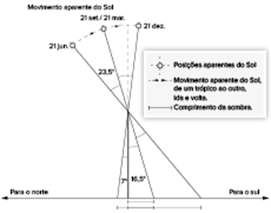
Na figura, um relógio de sol vertical está localizado em Goiânia
(latitude 16° 30’ Sul). O marcador do relógio está representado pela barra vertical. Quando
iluminado pelo Sol, ao longo do ano, o relógio projeta sombras ao meio-dia (representadas na
figur. Visto a partir das localidades intertropicais, o Sol passa (movimento aparent duas
vezes pelo zênite, o ponto mais alto do céu (Z). Considerando-se a figura e que, em uma
situação ideal, o deslocamento do Sol seja uniforme, conclui-se que os meses,
aproximadamente, nos quais o Sol passará duas vezes pelo zênite de Goiânia, serão
dezembro e fevereiro.
novembro e janeiro.
dezembro e março.
novembro e março.
janeiro e fevereiro.
13
PUC-RS 2016 As marés são alterações do nível das
águas dos oceanos e mares verificadas em todo o planeta. Elas interferem de maneira
significativana
formação das correntes marítimas, nas rotas de navegação e na pesca. As variações nas
marés devem-se
à atração lunar sobre as águas, entretanto o Sol também exerce influência nesse
fenômeno. Diante
disso, são feitas as seguintes afirmativas:
Quando o Sol e a Lua estão em conjunção ou
oposição, suas ações se somam, ampliando a variação das marés.
Nas quadraturas, a variação
das marés se reduz, em função da posição ocupada pelo Sol e pela Lua, em ângulo de 90°.
No caso brasileiro, a amplitude das marés é maior no litoral Sul e
Sudeste do que nos estados do
Norte e Nordeste.
As marés vivas, ou marés de sizígia, ocorrem em período de lua
cheia ou
nova.
Estão corretas apenas as afirmativas
I e II.
I e III.
III e IV.
I, II e IV.
II, III e IV.
14
Unicamp-SP As marés são movimentos periódicos de
elevação e abaixamento dos oceanos e mares provocados pela ação gravitacional da Lua e
do Sol sobre
a Terra. A figura abaixo representa os momentos de ocorrência de marés de sizígia e de
marés de
quadratura. Observe a figura e responda às questões.
Em que
condições ocorrem marés de sizígia e marés de quadratura, e que consequências essas
condições
têm para a amplitude de marés?
Indique duas formas geomorfológicas que podem ser influenciadas
pelas marés nas zonas costeiras.
15
Unisc-RS 2015 (Adapt.) Leia o fragmento da notícia a
seguir.
Sexta-feira é marcada por eclipse solar, equinócio e superlua
Esta sexta-feira (dia 20/03/15) é marcada pela coincidência de três eventos
astronômicos: o único eclipse solar total de 2015, que pode ser visto em países do
Hemisfério
Norte; o equinócio; e uma superlua.
Sobre os três fenômenos citados acima podemos dizer que
o equinócio nessa data marca o fim do verão e a chegada do outono
no Hemisfério Sul,
quando o dia e a noite têm exatamente a mesma duração (12 horas).
o alinhamento entre Sol,
Terra e Lua, com a Lua mais próxima da Terra, resulta no fenômeno conhecido como
superlua.
eclipse é o escurecimento parcial ou total de um corpo celeste, provocado pela
interposição de
um outro corpo celeste. O eclipse solar é um fenômeno astronômico que ocorre toda vez
que a Terra
fica entre o Sol e a Lua.
o equinócio nessa data marca o fim do verão e a chegada da
primavera no Hemisfério Sul. Quando o dia e a noite têm exatamente a mesma duração (12
horas).
o dia e a hora do início dos equinócios mudam de ano para ano; consequentemente, a
duração da
estação de cada ano também varia.
Assinale a alternativa correta.
Somente as afirmativas I, II e IV estão corretas.
Somente as afirmativas III, IV e V estão corretas.
Somente as afirmativas I, III e IV estão corretas.
Somente as afirmativas I, II e V estão corretas.
Todas as afirmativas estão corretas.
16
UFRGS 2018 Considere as seguintes afirmações sobre os
eclipses.
Os eclipses solares só acontecem durante a lua nova, quando a Lua
fica entre a
Terra e o Sol, pois, se os três corpos não estiverem alinhados perfeitamente, a Lua irá
bloquear
apenas parte do Sol, gerando solar parcial.
O eclipse lunar acontece durante a lua
crescente e quando a Lua penetra total ou parcialmente no cone de sombra projetado pela
Terra.
O eclipse lunar é uma evidência da esfericidade da Terra.
Quais estão corretas?
Apenas I.
Apenas II.
Apenas III.
Apenas I e III.
I, II e III.
17
Uerj 2018 Considerando a variação do período de
luminosidade em cada dia ao
longo do ano, identifique o equívoco da fala da personagem sobre o solstício de inverno.
Em seguida, indique uma localização na superfície terrestre onde não
ocorre a mencionada variação de duração do dia, justificando sua resposta.
Superação
UFBA (Adapt.)
Posições do sol ao meio-dia
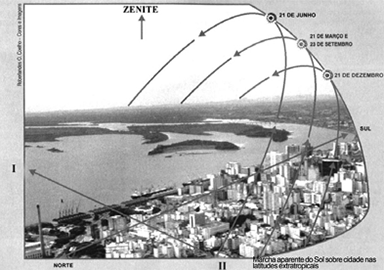
Fundamentado na ilustração, nos conhecimentos relativos à questão da
orientação sobre o espaço geográfico e na observação das diferentes posições do sol na linha
do horizonte, em diferentes períodos do ano, sobre uma cidade localizada em latitudes
médias,
identifique em que hemisfério se localiza a cidade mostrada
na
ilustração, explicando o motivo pelo qual o sol, ao meio-dia, em 21 de junho,
encontra-se
posicionado no ponto mais alto da linha do horizonte.
identifique, na cidade apresentada na figura, as estações do
ano e
os períodos de solstício ou equinócio em
21 de março:
período:
23 de setembro:
período:
cite duas consequências geográficas ligadas à trajetória da
luz do
sol, na linha do horizonte, ao se deslocar no sentido de I para II.